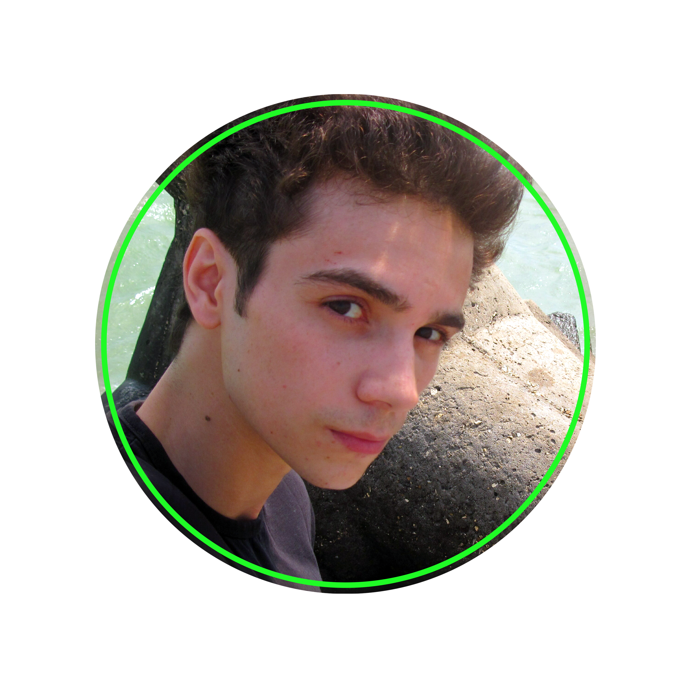

I’m interested in becoming a Sys admin, Network engineer, Web Developer, and Python programmer.
Technological high school Nr 1 Alexandria
high school professional qualification level 3 Electronics Technician
Grade: Electronics Technician
Activities and societies:
-Fixing: PCs stop working, froze, boot loop, blue screens, drivers; software; antivirus install,
-Installing new Operating Systems (Windows, Linux, MacOS X, Android...) and training how to use it.
-Helping people trough remote with drivers; software issues, changing/customizing OS settings, document convert(from PDF to Ms Word, from Text to PDF, ODS to Ms Word...).
-Mounting/installing computer components, troubleshooting PC/Laptop issues,
-Complete cleaning PC/laptop, change thermal paste.
-Updating BIOS and other firmware.
-Install home/office networks. Install network devices: modem, router, switch, access point, hotspot, connect clients to the network, test if all clients are linked to the network.
-Install Windows Server -install Roles
-install Active Directory Domain Service add users, delete/disable users, move users, reset user passwords, add/delete computers, create OU organizational units... use of group policy GP to configure and customize Clients...
-By freelance` I mean that I am/was offering IT services to people that were needing help, I am doing everything that is needed, if it was something I did not know, I was learning about it, and fixing the problem...
-I don't have firm/corporative experience, I have experienced just because I like IT and helping when people want my help...
repair services for mobile phones, tablet and pc · Full-time
- installation of operating systems and programs on desktop / laptop computers
- installation of operating systems and programs on mobile devices
- revision of device failure, find problem and solve (change broken parts, weld and measure with the necessary tools)
- data recovery from HDD, usb pendrive, micro SD with special programs and electronic work to repair / change the necessary parts that do not allow access to the data.
- maintenance of logical part operating systems, physical part desktop / laptop computers and networks (cleaning, stabilize / monitor temperatures, change parts with wear / thermal paste, check performance, check speeds and loss of data packets on the network maintaining the best signal possible for better data packet speed)
-back up system / data and installation / configuration of antivirus / firewall protection
Edit video, audio, and photo at basic level.
Video editing, with menu and summary.
Designing DVD and case covers.
Writing on DVD and/or USB storage.
Some customers want to be uploaded to an internet cloud with a password.
Clean inappropriate videos and pictures.
Looking for a new design, so that the work is as unique as possible for the client.
● Home lab:
Mounting whole PC/laptop hardware
Installing Operating System, drivers and necessary software
roubleshooting PC/laptop errors, issues…
Finding solutions to problems on the internet, looking for info of how to solve a specific problem and apply the fix.
Maintaining PC, laptop devices: - cleaning, -testing, -updating software…
● Activite Directory lab:
I used Virtual Box to mount and install 3 windows OS and 1 windows server 2016.
installed RSAT on clients, installed AD on server …
configured the LAN virtual network …
created new users, change/reset user passwords, user permissions
Create new OU, build new departments with OU(office, designers, countability … )
● Ticketing lab:
Using Spiceworks cloud help desk to learn ticketing
rganize, prioritize, open/close tickets
Taking notes of how a problem was solved
rganize tasks with custom ticket queues
rioritize based on priorities and categories
● Docker lab:
Playing with containers on linode.com
reate Docker virtual space in linode cloud.
ull images and run the containters.
Docker hub (pull out a preconfigured environment)
● Networking - CISCO packet tracer lab:
(Enroled in CISCO CCST 'Cisco Certified Support Technician' course, ongoing) planning to get CCNA cert
Building virtual networks, using different topologies: Star, Bus, Ring, Tree, Hybrid, Point to Point…
nstalling routers, switches, hubs, IOT gateways, IOT devices …
Configuring devices, Troubleshooting connections
Working with logical and physical devices, locating their spot in the network
● Remote desktop support lab:
Installed 3 window OS in a virtual environment in a same network
sed Anydesk, TeamViewer, Remote desktop…
Shared files between clients
hared printer between clients
● Using Proxmox, VMware, Virtual Box, KVM, Windows Hyper-v lab:
Proxmox lab: Learning about how to install Proxmox, use Data center, nodes, VMs, containers, creating templates, cluster, Cloud init, SSH.
Mounting and installing different type of Operating Systems in virtual environment
Installed Linux, Windows, Mac OS, Android OS in virtual environment on Windows and Linux host
laying with different OS to learn how they look and work (Linux: Debian, Ubuntu, Fedora… Windows: XP,7, 8, 10, 11, server 1016… macOS: El Capitan, High Sierra, Big Sur… )
● Web Design lab:
(Enroled in Web developer course, ongoing)
Using VS Code for coding
Building web sites using: HTML, CSS, Flex, Grid, bootstrap, specificity